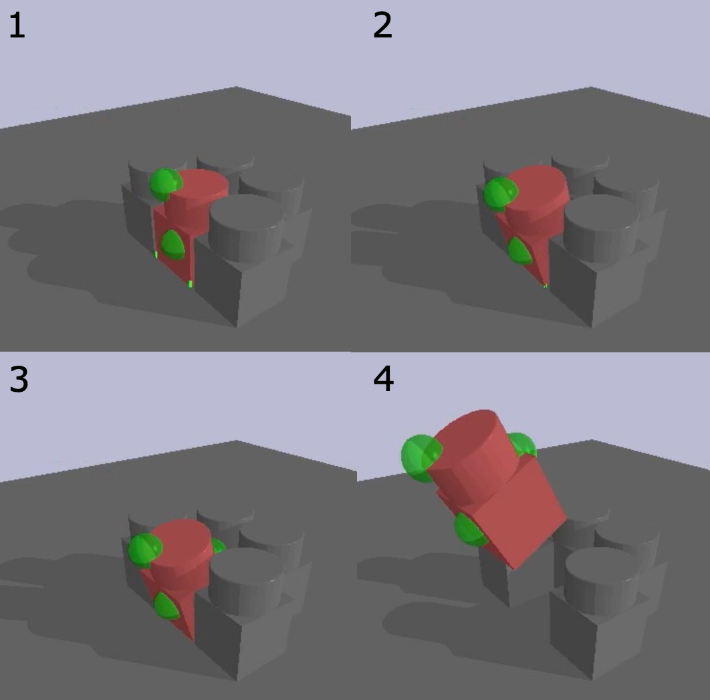

|
Yuemin Mao I am a 1st-year Ph.D. student at the Robotics Institute, Carnegie Mellon University, advised by Prof. Jeffrey Ichnowski. My research interest lies in robotic manipulation. In 2023, I received my B.S. in Mechanical Engineering with an additional major in Robotics from Carnegie Mellon University. During my undergraduate years, I worked on extrinsic dexterous manipulation at the Manipulation Lab (MLab), advised by Prof. Matthew T. Mason Email / Google Scholar / Github / LinkedIn |

|
Research |
|  |
Autogenerated Manipulation Primitives
Eric Huang, Xianyi Cheng, Yuemin Mao, Arnav Gupta, Matthew T. Mason The International Journal of Robotics Research (IJRR), 2023 paper |
|
|
Extrinsic Dexterous Manipulation with a Direct-drive Hand: A Case Study
Arnav Gupta*, Yuemin Mao*, Ankit Bhatia*, Xianyi Cheng, Jonathan King, Yifan Hou, Matthew T Mason IEEE/RSJ International Conference on Intelligent Robots and Systems (IROS), 2022 paper / video |
|
Modified from template. |